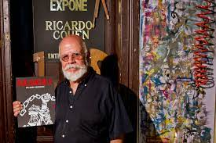

El Indio es la voz y compositor de esta banda. Paso por bandas como Los fundamentalistas del aire acondicionado y Ptricio rey y sus redonditos de ricota. Su ultima presentación en vivo fue el 11 de marzo de 2017 se presentó nuevamente en Olavarría ante 300 000 personas, batiendo un récord en toda la historia del rock argentino tanto para shows pagados como gratuitos. Solari está casado desde 1988 con Virginia Mones Ruiz con quien en 2000 tuvo a su primer y único hijo hasta el momento, Bruno. Viven en una casa de campo en Parque Leloir donde él tiene su propio estudio de grabación. En un recital en Tandil el 12 de marzo de 2016 confirmó que padece la enfermedad de Parkinson. En junio de 2021 se publico "La vida es una misión secreta", un libro que abarca las letras compuestas por Solari.

Skay es guitarrista, cantante y compositor, es considerado como un guitarrista esencial del rock de Argentina. Comenzó a los 12 años a estudiar guitarra con el maestro Leopoldo Ezcurra. Tras cuatro años de estudios, conformó un grupo junto a sus amigos Miguel, Jorge y Alfredo el grupo musical lo llamaron Taxi Rural. En 1968 viajó a Francia y Gran Bretaña, que puede considerarse como un viaje iniciático para su producción artística. Formó parte, junto a su hermano Guillermo Beilinson y músicos como Héctor "Topo" D'Aloisio, Bernardo Rubaja, Kubero Díaz, "Morci" Requena e Isa Portugheis, de los grupos Diplodocum Red & Brown y La Cofradía de la Flor Solar, fuertemente influenciadas por la psicodelia y la cultura hippie. Tambien formo parte de "Patricio Rey y los Redonditos de Ricota" y de "Skay y los Fakires" luego del 2002 Skay empieza su carrera como solista, el primer disco de esta nueva época fue titulado "A través del mar de los sargazos", acompañado por Daniel Colombres en batería y Claudio Quartero en bajo, con producción de la "Negra Poli". Durante su etapa del 68' viviendo en comunas y en diversos sitios de la geografía de Argentina, conoció a su pareja, Carmen Castro más conocida como La Negra Poli, y futura mánager y alma mater de Los Redondos.
Semilla es un músico y artista plástico argentino reconocido por su notable participación como bajista de Patricio Rey y sus Redonditos de Ricota, en la cual se mantuvo activo desde 1982 hasta la separación de la misma en 2001. En 2011, volvió a reunirse con Dawi para formar el espectáculo conceptual "SemiDawi: Ambos a la vez", mientras que en 2013 comenzaron a presentarse en conjunto con la banda "The Comando Pickless" de Sidoti, bajo la temática "SemiDawi + The Comando Pickless". Finalmente y tras casi 16 años fuera de la actividad, en 2017 retornó a la actividad musical integrando junto a los ex-Redondos Dawi, Sidoti y Tito Fargo, la agrupación Los Decoradores reinterpretan los antiguos shows de Patricio Rey bajo la temática "Kermesse Redonda". Vivió su juventud en la provincia de Buenos Aires, y sus comienzos en la música datan desde mediados hasta fines de la década de 1970, en donde integró algunos grupos y llegó a ser encargado de equipos del grupo Crucis. En 1982, Alejandro Pensa lo invita a formar parte de Patricio Rey y permaneció con ellos hasta su disolución. Tras la disolución de Patricio Rey, realizó una pausa en su carrera como músico para dedicarse de lleno a la pintura artística, llegando a prestar su arte a sus excompañeros en Los Redondos, Sergio Dawi y Walter Sidoti.
Walter fue el baterista de los Redonditos de 1987 hasta 2001 y ocupó uno de los lugares más codiciados y respetados de la música nacional.
Durante su estadia de nueve años en España, se desempeñó como músico en diversas formaciones de música popular. Fue el saxofonista y tecladista de Pateicio Rey y Sus Redonditos de Ricota durante más de 14 años. En 2013 participa en el disco del Indio Solari "Pajaritos, bravos muchachitos", interpretando "La pajarita pechiblanca" junto a los ex Redondos Walter Sidotti y Semilla Bucciarelli.
Inició su carrera profesional en 1986 no sólo tocando la batería en numerosas bandas sino también trabajando en la producción musical de las mismas. Se dedica a la docencia desde 1988. Actualmente realiza cursos y clínicas de batería sobre percusión electrónica y tecnología aplicada a la música. En 1993 comenzó a tocar y formar parte de la banda llamada “Patricio Rey y sus Redonditos de Ricota”. participó en los últimos cuatro discos, no sólo como músico sino también como programador midi, operador de Protool y Nuendo, y fue el responsable de la grabación y mezcla. En 2002 desempeñándose como baterista, productor y técnico responsable del estudio donde graban llamado “ Luzbola”. En 2005, junto al “Indio Solari” contribuyó a la formación de una nueva banda llamada “Los Fundamentalistas del Aire Acondicionado”

Es una representante de artistas, productora y empresaria musical argentina, especialista en bandas de rock argentino. Es reconocida en el ambiente musical Sudamericano por haber sido la histórica mánager del celebrado grupo de rock Patricio Rey y sus Redonditos de Ricota. Tras la separación de dicha banda continúa con su actividad acompañando y representando a la banda de su esposo y excompañero de Patricio Rey. Conoció a Skay Beilinson en algún momento de 1969, cuando ella tenía alrededor de 19 años. Ésta sería su futura pareja, manager y alma mater de Patricio Rey y sus Redonditos de Ricota y bandas posteriores. Castro produjo A través del Mar de los Sargazos, el primer álbum de estudio solista de su pareja Skay, el cual fue lanzado en 2002
Rocambole es un artista plástico, diseñador gráfico y profesor de Bellas Artes argentino que diseño la tapas de los albums de los Redondos, exepto "cordero suelto". Fue el encargado de dibujar el logo de las últimas 5 ediciones del Festival Cosquín Rock. En 1964 ingresa a la Escuela Superior de Bellas Artes de la Universidad Nacional de La Plata.
Sergio Dawi, Semilla Bucciarelli y Tito Fargo se juntaron y formaron "Los Decoradores" tiempo después se cambio a "Kermesse Redonda"donde hacen homenajes a la banda y tocan las canciones